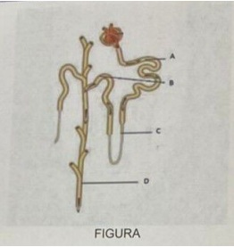
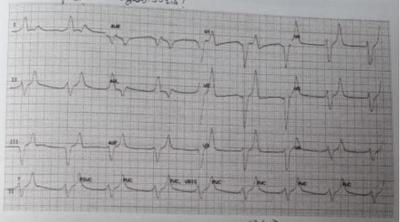
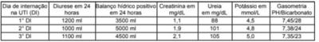
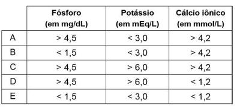
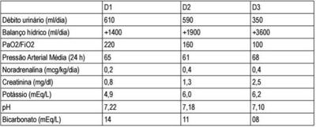

Questão 1 · Nef rologia · 4000185586Paciente de 56 anos de idade com diagnóstico prévio de cirrose hepática de etiologia metabólica comparece ao pronto atendimento com quadro de aumento do volume abdominal, confusão mental e piora da icterícia. Os exames laboratoriais demonstram piora da função renal (creatinina basal=0,9 mg/dL; creatinina atual=2,1 mg/dL), leucocitose e elevação de proteína C reativa. Em relação ao quadro clínico descrito acima, assinale a conduta CORRETA.
A Realizar expansão volêmica com ringer lactato devido a disfunção renal.
B Iniciar diurético venoso para melhor controle da ascite.
C Iniciar antibiótico de amplo espectro.
D Realizar paracentese diagnóstica e expansão com albumina venosa.
Questão 2 · Rabdomiólise · 4000185448Homem, 33 anos, atleta de cross t e sem comorbidades, é admitido no pronto atendimento por mialgia intensa há 5 dias, evoluindo com náuseas, vômitos, inapetência e queda do estado geral há 1 dia. Exames laboratoriais evidenciaram creatinina = 6,82 mg/dL, ureia 202 mg/dL e exame de urina com hemácias 2/campo e hemoglobina ++++. O principal mecanismo fisiopatológico da insuficiência renal aguda desse paciente é:
A isquemia renal medular.
B depósito de imunocomplexos em glomérulo.
C obstrução tubular por pigmentos heme em associação com ácido úrico.
D dilatação de arteríola eferente glomerular.
E ação direta de toxinas no túbulo distal.
Questão 3 · Diálise de urgência · Cálculo da taxa de f iltração glomerular · 4000183897Maria, 20 anos de idade, foi submetida à cirurgia de histerectomia de urgência há 12 horas e evoluiu no pós-operatório imediato com interrupção súbita da diurese. As seguintes hipóteses foram descartadas: instabilidade hemodinâmica transoperatória, uso de medicações nefrotóxicas, retenção urinária e desidratação. O ultrassom que foi realizado, no leito, evidenciou hidronefrose bilateral. Após revisão do caso clínico, foi diagnosticada ligadura inadvertida dos ureteres bilateralmente, justificando a interrupção da diurese. Após 24 horas do procedimento, a paciente encontra-se estável, com dor de leve intensidade na ferida operatória e com dieta pastosa liberada por via oral. Ao exame físico, constatou-se o seguinte: PA: 120 x 80 mmHg; frequência cardíaca: 70 bpm; frequência respiratória: 16 irpm; saturação de oxigênio (em ar ambiente): 99%; diurese mensurada em sonda vesical de demora em 24 horas: ZERO; ausculta pulmonar: sem alterações. Exames pré-operatórios apresentaram os seguintes resultados: Hemoglobina 13 g/dL; Leucócitos 6.000 células/mm³; Plaquetas 400.000/mm³; Creatinina 0,6 mg/dL; Ureia 30 mg/dL; Sódio 140 mEq/L; Potássio 4,5 mEq/L; Cloro 98 mEq/L; pH 7,40; HCO3 24 mEq/L; PCO2 40 mmHg; BE 0. Os resultados dos exames com 24 horas após procedimento foram os seguintes: hemoglobina 12 g/dL; leucócitos 8.000 células/mm³; plaquetas 252.000/mm³; Creatinina 0,8 mg/dL; ureia 55 mg/dL; sódio 142 mEq/L; potássio 5,2 mEq/L; cloro 100 mEq/L; pH 7,35; HCO₃ 22 mEq/L; pCO₂ 40 mmHg; BE 0. Diante do quadro apresentado, após realização da histerectomia, a taxa de filtração glomerular (TFG) é
A < 10 ml/minuto/1,73 m² e deve-se aguardar, por haver tempo hábil, uma eventual tentativa de reversão da ligadura dos ureteres (dentro de 24 horas) antes de indicação de diálise, visto que a paciente não tem critérios para iniciar terapia renal substitutiva de urgência.
B > 90 ml/minuto/1,73 m² e deve-se encaminhar a paciente para iniciar diálise de urgência, visto que se encontra anúrica.
C < 10 ml/minuto/1,73 m² e deve-se encaminhar a paciente para iniciar diálise de urgência, visto que se encontra anúrica.
D > 90 ml/minuto/1,73 m² e deve-se aguardar, por haver tempo hábil, uma eventual tentativa de reversão da ligadura dos ureteres (dentro de 24 horas) antes de indicação de diálise, visto que a paciente não tem critérios para iniciar terapia renal substitutiva de urgência.
Questão 4 · Síndrome de Lise Tumoral SLT · Síndrome de Lise Tumoral · Síndrome de lise tumoral SLT · 4000183291A síndrome de lise tumoral é caracterizada pela destruição maciça de células malignas e consequente liberação do seu conteúdo no espaço extracelular. Embora possa ocorrer de modo espontâneo, a síndrome de lise tumoral aparece, e m geral, logo após o início do tratamento com agentes quimioterápicos citotóxicos. A primeira classificação foi desenvolvida por Hande e Garrow, em 1993, e, recentemente, Cairo e Bishop a modi caram. Conforme os critérios mais recentes para o diagnóstico dessa síndrome, é necessário que o paciente apresente, de três dias antes até sete dias depois do tratamento, pelo menos duas das seguintes alterações:
A ácido úrico ≥ 5 mg/dL ou com aumento > 25% do valor de base; potássio ≥ 8 mEq/L ou com aumento > 25% do valor de base; fósforo ≥ 4,5 mg/dL ou com aumento > 25% do valor de base; e(ou) cálcio total ≤ 7 mg/dL ou com redução > 25% do valor de base.
B ácido úrico ≥ 8 mg/dL ou com aumento > 25% do valor de base; potássio ≥ 6 mEq/L ou com aumento > 25% do valor de base; fósforo ≥ 9 mg/dL ou com aumento > 25% do valor de base; e(ou) cálcio total > 7 mg/dL ou com aumento > 25% do valor de base.
C ácido úrico ≥ 5 mg/dL ou com aumento > 25% do valor de base; potássio ≥ 8 mEq/L ou com aumento > 25% do valor de base; fósforo ≥ 9 mg/dL ou com aumento > 25% do valor de base; e(ou) cálcio total > 7 mg/dL ou com aumento > 25% do valor de base.
D ácido úrico ≥ 8 mg/dL ou com aumento > 25% do valor de base; potássio ≥ 6 mEq/L ou com aumento > 25% do valor de base; fósforo ≥ 4,5 mg/dL ou com aumento > 25% do valor de base; e(ou) cálcio total ≤ 7 mg/dL ou com redução > 25% do valor de base.
E ácido úrico < 8 mg/dL ou com redução > 25% do valor de base; potássio < 6 mEq/L ou com redução > 25% do valor de base; fósforo < 4,5 mg/dL ou com redução > 25% do valor de base; e(ou) cálcio total > 7 mg/dL ou com aumento > 25% do valor de base.
Questão 5 · Síndrome de Lise Tumoral SLT · Síndrome de Lise Tumoral · Síndrome de lise tumoral SLT · 4000182163Homem, 39 anos, apresenta distensão abdominal e não evacua há 48 horas. Realizada tomogra a computadorizada de abdome com achado de massa de 11 x 8 cm nos maiores diâmetros e sinais de compressão intestinal. Exames laboratoriais: Hemograma: Hb: 8,4 g/ dL, HE 25%, VCM: 98 L, leucócitos: 14.000/mm³, plaquetas: 56.000/mm³ (esfregaço do sangue periférico mostrado na Figura): LDH: 3.236 U/L (VR < 230). ácido úrico: 13 mg/dL (VR < 6.0). Qual alteração eletrolítica é mais provável?

A Hiponatremia.
B Hiperfosfatemia.
C Hipercalcemia.
D Hipocalemia.
Questão 6 · Tratamento da cirrose · Nef rologia · Diuréticos poupadores de potássio · 4000182157Homem, 60 anos, portador do hepatite C diagnosticada há 20 anos, sem tratamento. Refere aumento progressivo do volume abdominal, edema nos membros inferiores e alteração do ciclo sono vigília. Exame físico: REG, descorado +/4+, hidratado. Abdome globoso, presença de macicez móvel e do sinal do piparote. Exames laboratoriais: Cr: 1,0 mg/dl. Na: 121 mEq/ L, K: 3,8 mEq/L. Qual é o local de ação do diurético mais indicado?

A D
B C
C A
D B
Questão 7 · Acidose metabólica · Etiologia Prérenal · Diagnóstico · 4000181132Paciente feminina, 85 anos de idade, hipertensa, diabética não insulinodependente, hipotireoidismo. Não respondia ligações da lha há 2 dias, foi encontrada desacordada em domicílio, trazida pelo SAMU em Glasgow 10, confusa, pouco comunicativa. Ao exame físico, regular estado geral, descorada 2+/4+, pupilas isocóricas, fotorreagentes, mucosas secas, axilas secas, murmúrio vesicular presente bilateralmente, roncos e estertores à direita, bulhas cardíacas rítmicas em 2 tempos sem sopros. Abdome plano, depressível, indolor. Sem edema de membros inferiores. Extremidades frias, mal- perfundidas, tempo de enchimento capilar 4 segundos. PA 90/50 mmHg, FC 143 bpm, FR 24 rpm, SpO2 92%. Sinais de depleção. Realizou tomogra a de crânio, sem sinais de sangramento ou isquemia aguda. Raios-X tórax com área de consolidação em base direita. Laboratório inicial com Hemoglobina: 6,5 g/dL; Leucócitos: 16.650 /mm3; Plaquetas: 50.000 /mm3; U: 205; Cr: 2,95; Na+: 154mEq/L; K+: 3,2 mEq/L; Gasometria com pH: 7,0; Bicarbonato: 10 mEq/L; pCO2: 14 mmHg; Cloro: 115 mEq/L; Glicemia: 95 mg/dL; Cálcio iônico: 0,9 mmol/L. Sobre o caso descrito, considere as afirmativas a seguir. I. Paciente apresenta acidose metabólica hiperclorêmica, visto cloro elevado e ânion-gap normal. Tem indicação de reposição de bicarbonato de sódio parenteral, a despeito de hipernatremia e hipocalcemia. II. Espera-se uma fração de excreção de sódio urinário elevada, visto hipernatremia hipovolêmica. III. A relação Ureia/Creatinina sérica elevada sugere etiologia pré-renal de injúria renal, contudo pode estar aumentada em casos de sangramento gastrointestinal, devendo ser ponderada a hipótese diagnóstica. IV. Paciente apresenta distúrbio de água e sódio sobrepostos. A expansão com solução de Ringer- Lactato é uma boa opção pelos distúrbios eletrolíticos presentes. Assinale a alternativa correta.
A Somente as afirmativas I e II são corretas.
B Somente as afirmativas I e IV são corretas.
C Somente as afirmativas III e IV são corretas.
D Somente as afirmativas I, II e III são corretas.
E Somente as afirmativas II, III e IV são corretas.
Questão 8 · Quimioterapia · Hematologia · Síndrome de Lise Tumoral SLT · 4000175783Um homem de 23 anos é tratado com quimioterapia de indução para leucemia linfoblástica aguda. A contagem inicial de leucócitos antes do tratamento foi de 155.000/ EXCETO:
A Lesão renal aguda.
B Hipercalcemia.
C Hiperpotassemia.
D Hiperfosfatemia.
Questão 9 · Etiologia Pósrenal · 4000175557Após obstrução do trato urinário superior, há desregulação dos canais de água de aquaporina no túbulo proximal, alça descendente e ducto coletor, o que pode contribuir para a poliúria em longo prazo. Várias outras mudanças funcionais com a obstrução podem ocorrer. Na obstrução do trato urinário, sabe-se que
A a excreção de potássio após o alívio da obstrução ureteral bilateral é maior do que após a obstrução ureteral unilateral porque, na obstrução bilateral, há retenção de sódio, água, ureia e outras substâncias osmóticas e aumento do fator natriurético atrial.
B a recuperação da função renal após o alívio da obstrução é afetada pela duração, grau, idade do paciente, função renal basal, complacência do sistema coletor e infecção.
C a obstrução ureteral pode resultar em diminuições prolongadas na capacidade de concentração, alcalinização urinária e transporte de eletrólitos muito depois de a obstrução ser liberada.
D o crescimento renal compensatório diminui progressivamente com o aumento da idade. O rim aumenta com o aumento de néfrons e do número de glomérulos após o nascimento.
Questão 10 · Síndrome de Lise Tumoral SLT · Síndrome de Lise Tumoral · Síndrome de lise tumoral SLT · 4000169582Sobre a síndrome de lise tumoral (SLT), analise os itens abaixo: I. A síndrome é ocasionada pela lise maciça de células tumorais, levando à hiperuricemia, hipercalemia, hiperfosfatemia e hipocalcemia. II. Em razão da gravidade do quadro relacionado à SLT, a identi cação de pacientes oncológicos com maior risco é fundamental, uma vez que a instituição rápida de medidas preventivas constitui a etapa prioritária nesse grupo de pacientes. III. A hipercalcemia, comum na SLT, pode levar a graves arritmias (por exemplo, torsades de Pointes) e irritabilidade neuromuscular (tetania, convulsões e estado de mal epiléptico). Está(ão) CORRETO(S):
A Todos os itens.
B Somente o item II.
C Somente o item III.
D Somente os itens I e II.
Questão 11 · Nef rologia · Def inição · 4000169310Durante estágio na nefrologia, você é solicitado para avaliar um paciente de 72 anos de idade com diabetes mellitus tipo 2, internado para a urologia devido choque séptico urinário secundário a hiperplasia prostática benigna. Já na admissão, ele apresentava creatinina sérica de 3,6 mg/dl, sendo que no sistema hospitalar havia um exame prévio com valor de 1,8 mg/dl, com data de 2 meses atrás. Como deve ser classificada essa piora da função renal?
A É uma insuficiência renal aguda classificada como estágio KDIGO 1.
B É uma insuficiência renal aguda classificada como estágio KDIGO 2.
C É uma insuficiência renal aguda classificada como estágio KDIGO 3.
D É uma insuficiência renal crônica classificada como estágio KDIGO 5.
Questão 12 · Síndrome HemolíticoUrêmica SHU · Quadro clínico da síndrome hemolítico urêmica SHU · 4000169276Menina de 2 anos de idade, previamente hígida, apresentou 3 dias de diarreia sanguinolenta, que foi resolvida espontaneamente. Após a resolução do quadro diarreico, a mãe notou que a criança começou a apresentar palidez importante. Procurou a emergência do hospital e, ao exame físico, a criança apresentava-se pálida, irritada, afebril, com frequência cardíaca de 150 bpm, pressão arterial de 150/80 mmHg, com edema nas extremidades inferiores com formação de cacifo e petéquias disseminadas. O diagnóstico mais provável para este caso é:
A Septicemia.
B Meningococcemia.
C Síndrome hemolítico-urêmica.
D Púrpura trombocitopênica imunológica.
Questão 13 · Nef rologia · Etiologia Prérenal · 4000169022Considere os seguintes dados laboratoriais: I. Fração de excreção de sódio. II. Fração de excreção de ureia. III. Relação ureia/creatinina no plasma. Em um paciente com quadro de insuficiência pré-renal os achados mais prováveis, dentre os abaixo, são:
A Dado I:
B Dado I:
C Dado I:
D Dado I:
E Dado I:
Questão 16 · Nef rologia · Rabdomiólise · Rabdomiólise · 4000166372Leia o caso clínico a seguir. Paciente do sexo masculino, de 24 anos, 70 kg, portador de sindrome nefrótica desde os 17 anos de idade, corticodependente. Apresentou recidiva da síndrome nefrótica e foi optado por manter prednisona em 10 mg por via oral (VO) pela manhã. Iniciado ciclosporina (CSA) por VO 125 mg de 12/12 h. Medicamentos já em uso pelo paciente e mantidos: enalapril 10 mg VO de 12/12 h; sinvastatina 20 mg VO à noite, vitamina D 1000 U dia, carbonato de cálcio 500 mg VO. Paciente retornou ao pronto-socorro do hospital 15 dias após a introdução da CSA. Com queixa de dor no corpo, redução do volume urinário e urina de cor acastanhada. Os exames evidenciaram elevação da creatinina sérica de 1,0 mg dL (basal) para 2,5 mgdL. Qual o diagnóstico mais provável e o exame pra confirmação diagnóstica com base nas potenciais interações medicamentosas?
A Nefrite intersticial – pesquisa de eosinófilos na urina.
B Cálculos renais – ultrassonografia do aparelho urinário.
C Pré-renal – cálculo da fração de excreção de sódio.
D Rabdomiólise – dosagem de creatinofosfoquinase sérica.
Questão 17 · Nef rologia · Etiologia Prérenal · 4000166315Homem, 69 anos de idade, procura o PS com queixa de diarreia líquida iniciada há 4 dias e redução do volume urinário nas últimas 24 horas. Faz acompanhamento clínico para tratamento de insu ciência cardíaca em uso de carvedilol, enalapril e furosemida. Exames laboratoriais: creatinina = 1,5 mg/dL (VR: 0,8-1,2 mg/dL); ureia = 90 mg/dL (VR: 20-45 mg/dL); potássio = 4,9 mEq/L (VR: 3.5-5.0 mEq/L). Urina I: densidade 1.035 (VR: 1.005-1.030), presença de grande quantidade de cilindros hialinos, sem outras alterações. Fração de excreção urinária de sódio de 3% e fração de ureia: 28%. O diagnóstico mais provável é
A necrose tubular aguda tóxica.
B necrose tubular aguda isquêmica.
C lesão pré-renal por hipoperfusão.
D nefrite intersticial aguda.
Questão 18 · Etiologia Prérenal · 4000165298A azotemia pré-renal é a forma mais comum de insuficiência renal aguda, podendo estar associado mais frequentemente:
A à hemólise
B à litíase renal
C à hipovolemia
D ao contraste iodado
Questão 19 · Nef rologia · Etiologia Prérenal · 4000165143Suzana, 42 anos, há 3 dias com disúria, polaciúria e urina de odor fétido. Presumiu diagnóstico de cistite após breve pesquisa na internet e tomou Levo oxacina 500mg/dia por conta. Começou a apresentar náuseas e vômitos incoercíveis. Apesar de melhora dos sintomas urinários, sem resolução das náuseas e vômitos. Procurou pronto atendimento, onde foram realizados exames complementares. Creatinina séria 1,7mg/dL , ureia séria 130mg/dL. Parcial de urina com densidade elevada, sem proteinúria, leucocitúria ou hematúria. Ultrassonogra a de aparelho urinário normal. Baseado na história clínica e nos exames complementares, qual a provável etiologia da disfunção renal aguda?
A IRA intrínseca - nefrite intersticial aguda por pielonefrite.
B IRA intrínseca - nefrite intersticial aguda pela levofloxacina.
C IRA pré-renal - por depleção, secundária aos vômitos.
D IRA intrínseca - necrose tubular aguda pela levofloxacina.
E IRA pós-renal - por hipercontratilidade da musculatura detrussora da bexiga
Questão 20 · Prérenal x NTA · 4000129361Assinale a etiologia mais comum de Injúria Renal Aguda, que afeta 40-80% dos pacientes.
A Pré-renal.
B Pós-renal.
C Necrose Tubular Aguda.
D Nefrite Intersticial Aguda.
Questão 21 · Ateroembolismo por colesterol · 4000128412Paciente, 67 anos, do sexo masculino, internado em Unidade de Terapia Intensiva por quadro de Síndrome Coronariana Aguda sem elevação do segmento ST no ECG. Após realização de hemodinâmica com colocação de stent em artéria descendente anterior, evolui horas após com oligúria, edema em membros inferiores e eosino lia no sangue periférico, além de elevação de ureia e creatinina. Foi feito o diagnóstico de embolia por cristais de colesterol. Nesse caso, é mais comum encontrar qual dos achados abaixo:
A Hipocomplementenemia.
B Proteinúria nefrótica.
C Rash cutâneo serpiginoso.
D Xantelasmas difusos em abdômen.
E Hepatite aguda.
Questão 22 · Diálise de urgência · 4000128404Você está de plantão na UPA e recebe um adulto jovem previamente hígido que foi picado por uma cascavel há alguns dias, mas não procurou assistência médica. As queixas são de dispneia há 24 horas que piora quando deita, que não urina há pelo menos 1 dia e meio que nas últimas 3 horas passou a vomitar com sangue e a ter sangramento nasal. Ao exame, apresenta: dispneia importante, frequência respiratória de 30irpm, epistaxe, estertores crepitantes em bases pulmonares, PA = 160x100mmHg e edema de membros inferiores. Os exames colhidos à admissão mostram: hemograma normal, ureia = 250mg/dL, creatinina = 5,0mg/dl, sódio plasmático = 132mEq/L, potássio plasmático = 5,2mEq/L. Após as medidas iniciais de monitorização, oxigênio e uso de diuréticos, qual seria a melhor conduta?
A Iniciar solução de insulina com glicose até normalização do potássio.
B Indicar diálise de urgência.
C Iniciar anti-hipertensivo por via endovenosa.
D Iniciar expansão volêmica até que o paciente apresente diurese.
E Iniciar reposição de fatores de coagulação.
Questão 23 · Diálise de urgência · 4000124295Na injúria renal aguda, em casos avançados, recorre-se à realização de terapia renal substitutiva. São indicações de diálise na injúria renal aguda:
A Urina concentrada e fadiga.
B Hipocalemia e acidose respiratória.
C Clearance de creatinina < 10 ml/min e atrofia renal.
D Azotemia e síndrome urêmica.
E Oligúria por 6 horas e hipercalcemia.
Questão 24 · Prérenal x NTA · Etiologia Prérenal · 4000124113Dentre as opções a seguir, assinale a que apresenta um achado frequente na insuficiência renal aguda (IRA) pré-renal.
A Fração de excreção do sódio elevada
B Relação ureia plasmática sobre creatinina plasmática elevada
C Osmolalidade urinária abaixo de 500 mosmol/Kg H₂O
D Presença de cilindros granulosos na urina
E Concentração urinária de sódio acima de 20 mmol/litro
Questão 25 · Etiologia Prérenal · 4000123495Dentre as situações clínicas abaixo, todas de lesão renal aguda, qual a mais compatível com lesão renal aguda pré-renal?
A Paciente masculino, de 85 anos, apresenta vômitos, retenção urinária aguda, excreção fracionada de sódio > 1%, ureia sérica de 120 mg/dl e creatinina sérica de 4 mg/dl.
B Paciente masculino, de 25 anos, apresenta diarreia aguda profusa, hipotensão arterial, ureia sérica de 90 mg/dl, creatinina sérica de 2 mg/dl e exame qualitativo de urina (EQU) com cilindros hialinos.
C Paciente feminina, de 35 anos, apresenta hemorragia pós-parto, hipotensão arterial há 12 horas, diurese de 100 ml nas últimas 12 horas, creatinina sérica de 2 mg/dl e EQU com cilindros granulosos.
D Paciente feminina, de 25 anos, apresenta pielonefrite aguda com vômitos, em uso de sulfametoxazol- trimetoprim, com rash cutâneo, creatinina sérica de 3 mg/dl e diurese de 1.500 ml/24 horas.
E Paciente feminina, de 21 anos, apresenta proteinúria, hematúria, cilindros hemáticos e creatinina sérica de 1,5 mg/dl.
Questão 26 · Necrose Tubular Aguda NTA · 4000112819Homem de 62 anos de idade apresenta quadro de fraqueza, anorexia, adinamia e mal-estar há 2 semanas. Há 5 dias, apresenta diarreia aquosa, 6-7 episódios/dia, além de náuseas, vômitos e queda do estado geral. Tem antecedentes de hipertensão arterial e diabete melito, em uso de losartana, anlodipino, aspirina (100 mg/dia) e insulina em múltiplas doses. Glicemia capilar: 432 mg/dL, PA: 172 x 106 mmHg e FC: 108 BPM. Exames séricos: hemoglobina: 9,5 g/dL; leucócitos: 6 500/ mm³; plaquetas: 280 mil/mm³; ureia: 217 mg/dL; creatinina: 4,7 mg/dL; sódio: 133 mEq/L; potássio: 6,8 mEq/L; pH 7,18; bicarbonato: 18,7 mEq/L. Ultrassom com rins de tamanho normal, ecogenicidade aumentada, perda da diferenciação corticomedular e ausência de obstrução urinária. Com esses dados, é correto afirmar:
A a lesão renal aguda se deve à perda de líquidos e eletrólitos ocasionado pela glicosúriae estado hiperosmolar hiperglicêmico.
B a anemia é consequência de lesão aguda da mucosa gastroduodenal secundária à uremia.
C o sódio urinário deve ser menor que 20 mEq/L e a fração de excreção de ureia < 35%.
D o exame de urina pode apresentar cilindros granulosos e proteinúria leve (1 a 2+/4+).
E pelo nível sérico do potássio, o eletrocardiograma deve mostrar alargamento de QRS e ondas T em tenda.
Questão 27 · Síndrome de Lise Tumoral SLT · Síndrome de lise tumoral SLT · 4000106161Homem de 25 anos, ao ser submetido a quimioterapia para tratamento de linfoma de Burkitt, desenvolveu quadro típico de síndrome de lise tumoral, caracterizado por náusea, letargia, convulsão,
A Hipocalemia, hipofosfatemia e hipercalcemia.
B Hipercalemia, hipofosfatemia e hipocalcemia.
C Hipercalemia, hiperfosfatemia e hipocalcemia.
D Hipercalemia, hipofosfatemia e hipercalcemia.
E Hipocalemia, hiperfosfatemia e hipocalcemia.
Questão 28 · Rabdomiólise · 4000096029Paciente vítima de esmagamento apresenta quadro de rabdomiólise que evolui com insu ciência renal aguda. Qual o principal mecanismo da lesão renal:
A Glomerulonefrite
B Alteração pós renal
C Alteração pré-renal
D Nefrite intersticial aguda
E Necrose tubular aguda
Questão 29 · Sepse · 4000092752Identifique abaixo as afirmativas verdadeiras ( V ) e as falsas ( F ) em relação à injúria renal aguda na sepse. ( ) A identi cação precoce da hipoperfusão tecidual e o tratamento imediato da sepse podem minimizar a evolução para insuficiência renal. ( ) A lesão renal é causada por alterações na resposta inflamatória, não sendo possível interferir na instalação da insuficiência renal uma vez que foi desencadeada a cascata inflamatória. ( ) O acúmulo de fluidos sempre é desejável e reverterá a progressão para necrose tubular aguda. ( ) A expansão volêmica com soluções cristaloides balanceadas está associada à menor incidência de lesão renal aguda. ( ) O uso precoce de vasopressina melhora o desfecho renal. Assinale a alternativa que indica a sequência correta, de cima para baixo.
A V • F • V • V • V
B V • F • F • V • F
C F • V • V • F • V
D F • V • V • F • F
E F • V • F • V • V
Questão 30 · Rabdomiólise · 4000086133Homem, 34 anos, diagnóstico de epilepsia em uso regular de anticonvulsivantes, é levado à emergência por familiares que relatam ter presenciado crise convulsiva que durou, aproximadamente, 35 minutos. Negam diagnóstico de outras doenças prévias. Exame físico na chegada demonstra: Escala de Glasgow 10, pressão arterial 110/60 mmHg, FC 90 bpm, extremidades aquecidas, pulsos preservados. Exames complementares evidenciam: creatinina de 2,3 mg/dL, potássio de 5,9 mEq/L, sódio de 140 mEq/L, creatinoquinase (CK) de 5.200 UI/L, exame comum de urina com mioglobina+++, 3 hemácias / campo, sem proteinúria significativa e ausência de cilindros. Passada sonda vesical de demora, presença de 50 mL de urina no momento do procedimento e mais 50 mL ao nal das seis primeiras horas em que permaneceu na emergência. Em relação ao caso clínico, assinale a alternativa correta.
A A lesão renal é de origem parenquimatosa, provavelmente associada à medicação em uso, e deve ser manejada com hidratação com solução salina 0.9% em bomba de infusão a 1 ml/Kg/hora.
B Não é possível fazer o diagnóstico de lesão renal aguda, uma vez que não há registro de dosagens prévias de creatinina sérica, relação proteína/creatinina em amostra de urina, e não foi realizada ultrassonografia de rins e vias urinárias.
C A causa mais provável da perda de função renal é relacionada ao aumento de CK e mioglobina através da liberação de espécies ativas de oxigênio, levando à vasoconstrição intraparenquimatosa e ao dano tubular.
D A alcalinização da urina com bicarbonato de sódio profilaticamente está indicada, uma vez que a mioglobina é tóxica para as células tubulares, e a terapia renal substitutiva deve ser indicada.
Questão 31 · Síndrome de Lise Tumoral SLT · Síndrome de lise tumoral SLT · 4000082107A Síndrome de Lise Tumoral (SLT), decorrente da destruição maciça de células neoplásicas e com elevado potencial de mortalidade, é uma complicação temí vel em pacientes oncológicos. Sobre o diagnóstico e manejo da SLT, considere as seguintes afirmações: I - Síndrome de Lise Tumoral Laboratorial ocorre quando duas ou mais das seguintes anormalidades surgem espontaneamente ou após início de terapia oncológic a: hiperuricemia, hipercalemia, hiperfosfatemia e hipercalcemia. II - Síndrome de Lise Tumoral Clínica acontece quando a Síndrome de Lise Tumoral Laboratorial vem acompanhada de alguma complicação: elevação da creatinina, convulsões, arritmia cardíaca ou parada cardiorrespiratória. III - Rasburicase e hidratação com uidos intravenosos são recomendados como tratamento de primeira linha para pacientes com alto risco para Síndrome de Lise Tumoral Clínica. IV - A alcalinização urinária com bicarbonato de sódio aumenta a solubilidade do fosfato de cálcio nos túbulos renais, devendo ser indicada em pacientes com insuficiência renal, decorrente da Síndrome de Lise Tumoral. Estão corretas as afirmativas
A I e IV.
B II e III.
C I e II.
D III e IV.
Questão 32 · Etiologia Pósrenal · 4000053941Paciente admitido na instituição por confusão mental apresenta uréia 182 mg/dL e creatinina 8,2mg/dL, na investigação apresenta hematúria. US de rins e vias urinárias com dilatação pielocalicial a esquerda relacionada a cálculo de 1,2cm em ureter distal. Rim direito não visualizado. Considerando o caso, avalie as asserções a seguir e a relação causal proposta entre elas. I – A redução da taxa de filtração glomerular neste caso é atribuída à redução da perfusão glomerular. PORQUE; II – O aumento súbito de pressões intratubulares leva a alterações hemodinâmicas, desencadeadas pelo aumento da produção de óxido nítrico e consequente vasoconstrição.
A As asserções I e II são proposições verdadeiras, e a segunda é uma justificativa daprimeira.
B As asserções I e II são proposições verdadeiras, mas a segunda não é uma justificativada primeira.
C A asserção I é uma proposição verdadeira e a asserção II é uma proposição falsa.
D A asserção I é uma proposição falsa e a asserção II é uma proposição verdadeira.
E As asserções I e II são proposições falsas.
Questão 33 · Rabdomiólise · 4000046638Um paciente foi trazido para a emergência após ter sido vítima do desabamento do edifício onde morava. Ficou retido nos escombros por oito horas, antes de ser resgatado pelos bombeiros. Queixava-se de dor abdominal, mas a tomogra a foi normal. À admissão, foi diagnosticada uma fratura no fêmur direito e várias escoriações pelo corpo. Como a urina era muito escura, foi solicitado um sumário de urina que demonstrou presença de sangue, mas com sedimentoscopia normal. Que exame, dos citados abaixo, seria mais útil para esclarecimento diagnóstico quanto à alteração urinária?
A Gasimetria arterial
B Alanina aminotransferase
C Bilirrubinas
D Dosagem de porfirinas urinárias
E Creatinofosfoquinase
Questão 34 · Etiologias · 4000045915Sobre a Insuficiência Renal Aguda, é correto afirmar:
A A fração de excreção de sódio renal é maior que 1% na IRA pré-renal e menor que 1% na IRA intrínseca.
B A síndrome hepatorenal é uma das causas de insuficiência renal aguda, que comumente responde à expansão volêmica com cristaloide.
C A normalização da pressão arterial na Hipertensão Arterial Maligna nas primeiras 4h evita a instalação da insuficiência renal aguda.
D Pacientes com azotemia pré-renal e ICC (""síndrome cardiorrenal"") podem apresentar distensão venosa jugular, ritmo de galope, S3 e edema periférico e pulmonar.
E Os pacientes com azotemia pré-renal devido à depleção de volume, geralmente, demonstram hipotensão ortostática, taquicardia, baixa pressão venosa jugular e membranas mucosas ressecadas e edema pulmonar.
Questão 35 · Etiologia Prérenal · 4000042220As injúrias renais agudas podem ter diversas etiologias, que incluem causas metabólicas, tóxicas, desidratação, medicamentos, doenças autoimunes, entre outras. Uma jovem de 27 anos chega à UPA ofegante, com relato de diminuição do volume urinário, prostração e adinamia. Ao exame clínico, apresentava-se hipocorada (++/4+), taquipneica, desidratada, febril (TA = 38,8ºC). Exames laboratoriais revelaram: Hb: 8,9g/dL, creatinina sérica: 2,9mg/dL, ureia: 147mg/dL, pH sérico: 7,23) HCO3: 13,2, pCO₂: 25) Diante deste quadro, assinale a alternativa mais correta:
A Analisando-se os exames laboratoriais, é possível que se trate de uma insuficiência renal aguda pré-renal, pois a paciente encontra-se desidratada, e a relação ureia/creatinina é ≥ 40:1)
B Pode tratar-se de nefrite lúpica, pois a paciente tem critérios diagnósticos para lúpus eritematoso sistêmico. Deve-se fazer ivermectina e iniciar pulsoterapia endovenosa com metilprednisolona.
C A paciente apresenta acidose respiratória associada a insuficiência renal aguda, e deve ser considerada hemodiálise precoce, caso não exiba melhora clínica e laboratorial com medidas conservadoras.
D A paciente apresenta insuficiência renal crônica, demonstrada pela anemia crônica. Deve-se iniciar reposição de bicarbonato de sódio endovenoso, até a normalização do pH sérico.
Questão 36 · Hipocalemia · 4000039452Paciente admitido com quadro agudo de náuseas, vômitos, oligúria e confusão mental. Laboratório da admissão revelou aumento de escorias nitrogenadas, hiponatremia e hipocalemia. Assinale a alternativa que NÃO se enquadra nas causas do quadro clínico do paciente
A leptospirose.
B uso de Aminoglicosídeo.
C uso de anfotericina B.
D rabdomiólise.
Questão 37 · Rabdomiólise · 4000034090Homem de 45 anos vai ao pronto-atendimento queixando-se de mialgia difusa, fraqueza nos 4 membros e urina amarronzada em volume reduzido. Possui dislipidemia e gota e está em uso diário de sinvastatina e colchicina prescritos há 15 dias. Ao exame físico, apresenta FC 115bpm, PA 130/84mmHg, FR 21irpm, SpO₂ em ar ambiente 95%, Tax 38,3ºC. Encontra-se alerta e orientado, com força muscular grau 4/5 nos grupos proximais de membros superiores e inferiores, e 5 nos grupos musculares distais. Exames de laboratório: Hb 15,5g/dL; LG 12.400/mm³; NS 8.570/mm³; Linf 2.030/mm³; PCR 34mg/L; Creat 1,3 mg/dL; Ureia 55mg/dL; K+ 5,7mEq/L; CPK 2.570U/L. Assinale a alternativa CORRETA sobre a fisiopatogênese do quadro clínico em questão.
A A fraqueza muscular se deve principalmente à hipercalemia
B A hipercalemia se deve principalmente à disfunção renal.
C A injúria renal aguda se deve aos níveis elevados de CPK.
D A lesão do miócito se deve ao uso da sinvastatina e da colchicina.
Questão 38 · Síndrome HemolíticoUrêmica SHU · 4000032727Pré-escolar de três anos, sexo masculino, é trazido por seus pais à emergência pois parece pálido e menos ativo do que o habitual. Relatam que há dois dias apresentou febre de 38,5ºC, vômitos, diarreia com um pouco de sangue e que está urinando pouco nas últimas 12 horas, mesmo em uso de hidratação oral. Exame físico: acentuada palidez, irritabilidade, pouco responsivo e com acentuada sensibilidade à palpação abdominal. FC: 130bpm, FR: 36irpm, PA: 85 x 55mmHg. Exames laboratoriais: Hb:6g/dl, Ht:25,6%, leucometria:15.000/mm³ (bastões15%, segmentados 65%); plaquetas: 95.000/mm³, Na+: 135mEq/L, K+: 3,8mEq/L, creatinina: 5,2mg/dl, uréia: 108 mg/dl. EAS: 35 hemácias/campo. A hipótese mais provável é:
A Glomerulonefrite aguda
B Insuficiência renal crônica
C Leucemia linfoblástica aguda
D Síndrome hemolítico-urêmica
Questão 39 · Etiologias · 4000032655Relacione as lesões renais agudas com as suas causas. COLUNA I – Lesão renal aguda; 1. Necrose tubular aguda; 2. Glomerulopatia; 3. Hipovolemia; 4. Pós renal; COLUNA II – Causa; ( ) Síndrome hemolítico urêmica; ( ) Diabetes insipidus; ( ) Uso de antibióticos; ( ) Válvula de uretra posterior; Assinale a alternativa que apresenta a sequência CORRETA.
A 2 3 1 4.
B 4 1 2 3.
C 3 2 1 4.
D 2 1 4 3.
Questão 40 · Diálise de urgência · 4000023703Um paciente de 75 anos de idade procurou atendimento por diminuição do volume urinário e intolerância aos esforços, associada a dor torácica ventilatório-dependente e a dor lombar de forte intensidade. Realizou exames de laboratório, que evidenciaram: hemoglobina = 8,6 g/dL, hematócrito = 25%, leucócitos = 6.600/mm3, sem particularidades no diferencial, plaquetas = 190 mil/mm3, creatinina = 4,51 mg/dL, potássio = 6,3 mEq/L, cálcio sérico corrigido = 13 mg/dL, ureia = 109 mg/dL, reserva alcalina = 12 U/L. Ao exame físico, o paciente encontrava-se em regular estado geral, hipocorado, com presença de sopro sistodiastólico 2+/4+, murmúrio vesicular reduzido em 1/3 inferior direito, edema em membros inferiores 3+/4+, abdome sem particularidades e percussão-punho-lombar (PPL) negativo, PA = 180 mmHg X 90 mmHg, FC = 97 bpm, SatO2 = 92% em ar ambiente. Considerando esse caso clínico e os conhecimentos médicos correlatos, julgue o item a seguir. Com base nos dados clínicos, há indicação de hemodiálise para esse paciente.
A Certo.
B Errado.
Questão 41 · Necrose Tubular Aguda NTA · 4000021397Paciente masculino de 21 anos, com 60 kg de peso corporal, foi vítima de acidente botrópico, tendo dado entrada na Unidade de Emergência normotenso e em boas condições clínicas, onde recebeu tratamento convencional para o caso. Trinta e seis horas mais tarde, observou-se que a concentração da creatinina sérica do paciente era de 1,5 mg/dl, sendo que o exame na admissão mostrava valor de 0,9 mg/dl. Não se observou redução do volume urinário, que nas últimas 24 horas mostrava valor de 1140 ml. A dosagem de creatinina sérica foi repetida, confirmando-se a concentração de 1,3 mg/dl. Em relação à função renal assinale a alternativa CORRETA:
A o paciente deve estar apresentando somente injúria renal aguda pré-renal.
B a alteração laboratorial encontrada deve ser decorrente somente da lesão muscular associada à ação do veneno botrópico, não havendo injúria renal aguda.
C os dados são compatíveis com diagnóstico de injúria renal aguda, que muito provavelmente é de origem renal.
D os dados não são compatíveis com diagnóstico de injúria renal aguda, pois o valor da creatinina de 1,3.
E é necessária uma terceira dosagem da creatinina sérica para a confirmação de lesão renal aguda.
Questão 42 · Síndrome Cardiorrenal SCR · 4000002889Qual o elemento siopatológico mais importante na síndrome cardio-renal em pacientes com insu ciência cardíaca aguda descompensada?
A Síndrome de baixo débito cardíaco e perfusão renal ruim.
B Hipertensão venosa sistêmica com elevação de pressão venosa central.
C Insuficiência renal iatrogênica (medicamentos nefrotóxicos).
D Hipertensão arterial sistêmica não controlada.
E Piora de doença renal pré-existente (doença renovascular).
Questão 43 · Como dif erenciar Doença renal crônica e Lesão renal aguda · 4000001190Na insuficiência renal aguda
A Alterações no EAS não são frequentes.
B Anemia, normocítica, normocrômica, devido à falta de eritropoetina é uma achado universal.
C Acidose metabólica hipoclorêmica é um achado laboratorial muito frequente.
D A retenção de sódio de forma intensa, a níveis abaixo de 10 mEq/l são achados típicos E UNIVERSAIS da necrose tubular aguda
E Alterações anteriores dos marcadores da função renal; antecedentes patológicos de diabetes e hipertensão; presença de anemia normocítica normocrômica, alterações do cálcio, fósforo e PTH, são dados que indicam a possibilidade da presença da doença renal crônica ao invés de lesão renal aguda.
Questão 44 · Prérenal x NTA · Etiologia Prérenal · 4000123416Mulher de 90 anos é trazida a atendimento de urgência desorientada e desidratada após quadro de diarreia e vômitos com inicio há 20 horas. Os familiares referem que a paciente não urina há 12 horas. Ela se encontra hipotensa e você considera a possibilidade de iniciar uma hidratação vigorosa. Qual das opções apresenta parâmetros bioquímicos que reforçariam a necessidade de hidratação rápida?
A FeNa: 0,8%, sódio urinário: 12 mEq/l, ureia plasmática/creatina plasmática: 60.
B FeNa 2,2% sódio urinário 50 mEq/l, ureia plasmática/creatina plasmática: 30.
C FeNa 1,9, sódio urinário 40 mEq/l, ureia plasmática/creatina plasmática 65.
D Osmolaridade urinária : 330 mOsm/l, sódio urinário 60 mEq/l; Uosm/Posm 0,9.
E Osmolaridade urinária: 230 mOsm/l, sódio urinário 60 mEq/l; Uosm/Posm 1,1.
Questão 45 · Síndrome HemolíticoUrêmica SHU · Quadro clínico da síndrome hemolítico urêmica SHU · 4000097953Menino, 3a, é trazida a atendimento médico por febre e diarreia com muco e sangue há três dias. Mãe refere queda do estado geral há 1 dia, acompanhada de palidez cutânea e diminuição do volume urinário. Exame físico: FR = 60 irpm; FC= 140 bpm; T= 37,5°C; hipoativo, irritado, perfusão periférica lenti cada, olhos encovados, sangramento nos locais de punção e ausência de sinais meníngeos. Hb = 5,3g/dL; plaquetas = 85.000/mm³. A HIPÓTESE DIAGNÓSTICA É:
A Diarréia aguda com desidratação e anemia ferropriva.
B Leucemia aguda.
C Lúpus eritematoso sistêmico.
D Síndrome hemolítico-urêmica.
Questão 46 · Leptospirose · 4000090917Identifique abaixo as afirmativas Verdadeiras (V) e as Falsas (F) em relação à insuficiência renal aguda na leptospirose. ( ) É uma manifestação da segunda fase da doença. ( ) Caracteriza-se por ser não oligúrica e hipocalêmica. ( ) A hipocalemia deve-se à lesão do túbulo contornado distal, determinando excreção de potássio. ( ) Não responde à hidratação venosa. ( ) Os níveis séricos de ureia e creatinina não se elevam. Assinale a alternativa que indica a sequência correta, de cima para baixo:
A V - V - V - F - F.
B V - V - F - F - V.
C V - V - F - F - F.
D F - V - V - F - V.
E F - F V - V - V.
Questão 47 · Hipercalemia · Rabdomiólise · 4000086529Militar, 20 anos, chega à emergência após 12 horas de intenso treinamento em campo, com queixas de dor e fraqueza proximal em membros inferiores, associadas à oligúria. Referiu, ainda, que o pouco de urina produzida tinha cor de ferrugem. Eletrocardiograma realizado apresentou o traçado a seguir. Em relação ao caso clínico, afirmar-se: I. Ocorre acidose metabólica com "ânion-gap" normal. II. A reposição hidrossalina vigorosa é um tratamento adequado. III. Infundir 10 ml de gluconato de cálcio 10% em 10-20 minutos juntamente com nebulização com beta agonista é a primeira conduta terapêutica. Está/Estão correta (s) apenas a (s) afirmativa (s):

A I.
B III.
C I e II.
D II e III.
Questão 48 · Nef ropatia induzida por contraste · 4000054429A melhor estratégia para redução do risco de injúria renal aguda associada a contraste (nefropatia induzida por contraste) em pacientes submetidos à angiografia é:
A Furosemida antes da aplicação de contraste.
B Manitol antes da aplicação de contraste.
C Solução salina 0,9% antes e após a aplicação de contraste.
D Acetilcisteína antes e após a aplicação do contraste.
E Bicarbonato de sódio antes da aplicação do contraste.
Questão 49 · Acesso para diálise · 4000039876O acesso venoso para hemodiálise deve ser preferencialmente realizado na:
A Veia femoral.
B Veia subclávia direita.
C Veia jugular direita.
D Veia subclávia esquerda.
Questão 50 · Etiologia Prérenal · 4000039365Sobre a Lesão Renal Aguda, assinale a alternativa INCORRETA:
A A lesão renal aguda KDIGO 1 pode ser definida pela elevação da creatinina sérica ≥ 0,3mg/dl dentro de 48h.
B A lesão renal aguda pré-renal é a mais comum e, do ponto de vista fisiopatológico, está associada principalmente à depleção do volume intravascular, à redução do volume circulante efetivo, à redução do débito cardíaco e/ou à alteração da autorregulação renal.
C A lesão renal aguda pré-renal, caracteriza-se pela redução da absorção de ureia nos túbulos proximais, o que justifica a pouca elevação da ureia em relação à creatinina nos estados de hipovolemia.
D As medidas, como suspensão de drogas nefrotóxicas, uso de contraste de baixa osmolaridade e infusão de SF 0,9% (1ml/Kg/hora) de 12 horas antes e até 12 horas após o procedimento, ajudam na prevenção da lesão renal aguda induzida por contraste iodado.
Questão 51 · Etiologia Prérenal · 4000038410Paciente de 58 anos, masculino, com diagnóstico de cirrose hepática de etiologia alcoólica há dois anos. Em uso de furosemida 80 mg vo/dia e espironolactona 100mg vo/dia. Tal paciente procura PS apresentando piora do estado geral e redução do volume urinário há quatro dias. Exames de entrada mostram TGO: 48 UI/L, TGP: 40 UI/L, Bilirrubina total: 1,8 (BD: 1,2; BI: 0,6), INR: 1,8, Albumina: 2,1 g/dL, Ureia: 75 mg/dL, Creatinina: 2,5 mg/dL, Na: 148 mEq/L e K: 5,5 mEq/L. Hemograma sem anormalidades relevantes. Considerando o quadro de injúria renal observado, assinale a afirmativa correta.
A Trata-se de síndrome hepatorrenal, devendo-se iniciar restrição hídrica, octreotide e albumina IV de imediato.
B A primeira possibilidade a ser considerada é de azotemia pré-renal. Suspensão de diuréticos e hidratação venosa devem ser as primeiras medidas.
C Biópsia renal é a mandatória para se estabelecer corretamente a etiologia.
D Dosagem do sódio urinário é essencial no caso, tendo alta acurácica nesse contexto clínico.
Questão 52 · Lesão Renal Aguda no Hepatopata · 4000038362Homem de 52 anos, portador de cirrose alcoólica, é internado na enfermaria de clínica médica do Hospital Universitário Júlio Muller com quadro de anasarca oligúria e piora da função renal. De acordo com a Sociedade Brasileira de Hepatologia para Manejo de Lesão Renal Aguda na Cirrose (2017), é correto afirmar:
A A definição de lesão renal aguda em portadores de cirrose, segundo o International Club of Ascites (ICA), é o aumento da creatinina sérica ≥ 0,3 mg/dL em relação ao seu valor basal, ocorrido dentro de 48 horas.
B A administração de albumina venosa está indicada na profilaxia da síndrome hepatorrenal associada à peritonite bacteriana espontânea, a dose é de 1,0 g/Kg de peso no primeiro dia e de 2,0 g/Kg de peso no segundo.
C O tratamento isolado com a albumina é a terapêutica de escolha na síndrome hepatorrenal, já que a associação com vasoconstrictores sistêmicos foi proscrita pelo alto índice de efeitos colaterais.
D Após o diagnóstico de lesão renal aguda, a identificação da causa subjacente para adequado manejo e prognóstico não é mais necessária devido à incidência crescente de síndrome hepatorrenal.
Questão 53 · Tratamento · 4000025885A injúria renal aguda (IRA) é uma condição comum e associada a piores desfechos clínicos. De acordo com as diretrizes de IRA KDIGO 2012, tendo em vista as medidas de prevenção da IRA,
A A utilização de coloides com albumina, o dextran ou gelatinas é preferível no manuseio inicial da expansão volêmica em pacientes com IRA.
B O uso dos diuréticos de alça é uma estratégia consagrada para prevenção e tratamento da IRA, uma vez que está bem estabelecido que a IRA não oligúrica apresenta prognóstico melhor que a IRA oligúrica.
C O uso da N-acetilcisteína na prevenção da IRA pós-contraste é questionável; no entanto, o seu benefício na prevenção da IRA no pós-operatório de grandes cirurgias, como cirurgias cardíacas, é bem fundamentado.
D As formulações lipídicas de anfotericina B estão associadas a menor risco de nefrotoxicidade do que as formulações convencionais.
Questão 54 · Suporte dialítico modalidades · 4000025858Leia o caso clínico a seguir. Paciente internado há três dias na UTI, devido à insu ciência respiratória secundária a pneumonia, encontra-se em ventilação mecânica, em uso de droga vasoativa (noradrenalina), de meropenem e vancomicina, com indicação de início de terapia renal substitutiva (TRS). Apresenta os seguintes exames laboratoriais, diurese e balanço hídrico a cada 24 horas: Neste caso clínico, o método dialítico a ser adotado e a principal indicação de início da TRS são:

A Hemodiálise estendida, balanço hídrico positivo acumulado.
B Hemodiálise clássica, acidose metabólica.
C Hemodiálise clássica, hipercalemia.
D Diálise peritoneal ambulatorial contínua (CAPD), sintomas urêmicos.
Questão 55 · Etiologia Prérenal · 4000021379Mulher de 54 anos, com hipotireoidismo em tratamento com levotiroxina 75 mcg/dia, chega ao pronto-socorro após dois dias de diarreia e vômitos. Fora diagnosticada com gastroenterocolite aguda e medicada com soro de hidratação oral mas não tolerou o tratamento por causa dos vômitos. Relata diminuição do débito urinário. Exames laboratoriais evidenciaram potássio sérico 5,4 mEq/L, ureia 62 mg/dL e creatinina 2,3 mg/dL. Eletrocardiograma normal. Assinale a melhor opção terapêutica.
A Expansão com soro fisiológico 0,9%.
B Expansão com coloide.
C Expansão com cristaloide. Beta-2 agonista inalatório. Poliestirenossulfonato de cálcio.
D Expansão com soro fisiológico 0,9%. Solução de insulina com glicose, cinprofloxacina.
Questão 56 · Rabdomiólise e Mioglobinúria · Cirurgia · 4000017592Um trabalhador de empresa de energia elétrica, 23 anos, sofreu acidente de trabalho por queimadura de alta voltagem sendo a extensão da lesão estimada em 40% da área corporal com queimaduras de terceiro grau. Foi levado pelo SAMU para uma unidade de tratamento de queimados onde foi admitido e recebeu tratamento imediato. Após 48 horas do trauma, mantém estabilidade hemodinâmica, desenvolve escurecimento da urina (cor vermelho acastanhado), elevação importante da creatina quinase sérica (20 vezes acima do normal), hipercalemia e hipocalcemia. Qual deve ser a conduta imediata?
A Hemodiálise.
B Hidratação vigorosa.
C Manitol endovenoso.
D Alcalinização da urina.
Questão 57 · Leptospirose · 4000009965Sobre a Injúria Renal Aguda (IRA), assinale a alternativa correta.
A O uso de aminoglicosídeos em dose única diária não causa nefrotoxicidade.
B Na prevenção da nefrotoxicidade por contraste é indicado hidratação endovenosa e anti-inflamatórios não esteroidais.
C Na IRA pós-renal há um aumento discreto da creatinina sérica, enquanto a ureia sérica encontra-se bastante elevada.
D A doença de Weil na leptospirose, frequentemente, apresenta-se com IRA não oligúrica e potássio sérico com valor dentro da normalidade ou abaixo.
E Na IRA está indicado o uso de inibidores da enzima conversora da angiotensina (IECA) e Bloqueadores dos receptores da angiotensina II (BRA), sendo considerados medicamentos nefroprotetores.
Questão 58 · Diálise de urgência · 4000127502São critérios que orientam a necessidade de diálise de urgência, EXCETO:
A Acidose grave e refratária ao bicarbonato.
B Elevação abrupta da creatinina > 5 mg/dl.
C Sinais clínicos compatíveis com uremia.
D Hipervolemia não responsiva aos diuréticos.
E Hipercalemia grave (> 6,5 mEq/L) e refratária.
Questão 59 · Nef ropatia induzida por contraste · 4000120850Homem de 78 anos, hipertenso, diabético tipo 2 e tabagista, em uso de furosemida 40 mg/dia, metformina 1.000 mg/dia, AAS 100 mg/dia e losartana 100 mg/dia. Foi submetido a cateterismo e angioplastia devido à angina instável de alto risco com lesão significativa em descendente anterior. Manteve-se assintomático, estável hemodinamicamente, euvolêmico, com diurese satisfatória, sem sinais de infecção. Apresentou piora da função renal: creatinina basal e da admissão: 0,8 mg/dl; após 72h do procedimento: 1,2 mg/dl. O provável diagnóstico e as medidas que poderiam ter sido feitas para evitá-lo são, respectivamente:
A Nefropatia induzida por contraste; suspender drogas nefrotóxicas antes do procedimento, realizar hidratação endovenosa pré e pós-procedimento e usar contraste isosmolar (ou hiposmolar) em menor volume.
B Nefropatia induzida por contraste; suspender drogas nefrotóxicas antes do procedimento, realizar hidratação endovenosa pré e pós-procedimento, administrar acetilcisteína e estatina.
C Doença renal ateroembólica; suspender drogas nefrotóxicas antes do procedimento, realizar hidratação endovenosa pré e pós-procedimento.
D Doença renal ateroembólica; nada poderia ser feito para prevenção dessa patologia.
Questão 60 · Etiologia Prérenal · 4000099792Paciente de 53 anos, masculino, 70 kg, portador de hipertensão arterial sistêmica em tratamento regular com captopril e hidroclorotiazida, apresentou diarreia volumosa secundária à intoxicação alimentar. Foi admitido na emergência com hipotensão arterial (80/40 mmHg), FC 134 bpm, mucosas secas e referindo sede e redução do volume urinário nas últimas 8 horas. Após expansão volêmica vigorosa o paciente começou a urinar. Nos exames laboratoriais apresentava: Ureia 140 mg/dL (normal até 40 mg/dL), Creatinina 1,1 mg/dL (normal), K+2,8 mEq/L (nl 3,5-5,0 mEq/L), Na+141 mEq/L, pH: 7,23 ,bicarbonato 14 mEq/L (normal 24-28 mEq/L), Cloro 108 mEq/L, pCO2 30 mmHg. Assinale a correta:
A A etiologia da insuficiência renal aguda deve ser pré renal, com acidose metabólica e hipocalemia secundária a diarreia.
B A etiologia da insuficiência renal aguda deve ser pós renal, com acidose metabólica e hipocalemia secundária a alcalose compensatória.
C A etiologia da insuficiência renal aguda deve ser necrose tubular aguda, com acidose metabólica e hipocalemia secundária a tubulopatia.
D A etiologia da insuficiência renal aguda deve ser necrose tubular aguda, com acidose metabólica normoclorêmica e hipocalemia secundária a desidratação.
Questão 61 · Tratamento da Insuf iciência cardíaca · 4000099010Homem, 82a, é admitido referindo falta de ar e inchaço progressivos há duas semanas. Antecedentes pessoais: miocardiopatia dilatada. Medicações: carvedilol 25 mg/dia, enalapril 20 mg/dia e furosemida 40 mg/dia. Exame físico: regular estado geral; FC = 102 bpm; PA = 112 x 68 mmHg, Pulmões: murmúrio vesicular presente, estertores crepitantes bilateralmente; membros: edema de membros inferiores, sacral e perineal 4+/4+. Creatinina = 1,5 mg/dl; ureia = 68 mg/dl; potássio = 5,2 mEq/L. Nos quatro primeiros dias de internação faz uso de furosemida 20 mg, intravenoso de 8/8h, com melhora significativa das queixas. No quinto dia de internação refere tonturas, sem dispneia. Exame físico: FC= 88 bpm; PA = 96 x 54 mmHg, edema de membros inferiores 2+/4+. Potássio = 3,5 mEq/L; creatinina = 3,8 mg/dl e ureia = 202 mg/dl. A conduta é:
A Iniciar espironolactona.
B Diminuir a dose de carvedilol.
C Iniciar diálise.
D suspender o diurético e hidratar.
Questão 62 · Hipercalemia · Rabdomiólise · 4000078309Vítima de acidente automobilístico que cou preso nas ferragens, internado no CTI há 48 horas, em ventilação mecânica, evolui com oligúria, aumento de escorias nitrogenadas Creatinina=3,2 mg/dl (na admissão era de 0,9 mg/dl) e creatinofosfoquinase (CPK= 840.000 U/L). Apresenta potássio sérico K= 8,6 mEq/L e os seguintes achados no ECG. A causa mais provável da lesão renal aguda e a primeira medida terapêutica a ser dotada para controlar alterações no RCG são, respectivamente:
A sepse e furosemida.
B rabdomiólise e furosemida.
C rabdomiólise e gluconato de cálcio.
D desidratação e solução polarizante.
Questão 63 · Prérenal x NTA · 4000078042A Insuficiência Renal Aguda (IRA) é uma importante causa de morbimortalidade entre pacientes clínicos e cirúrgicos. Em relação à IRA, analise as proposições abaixo. I. A IRA Pré-Renal é a causa mais comum de IRA em pacientes hospitalizados.; II. Uma relação Ureia/Creatinina igual a 15/1 sugere azotemia pré-renal.; III NaUrinário> 40 é um achado comum na Necrose Tubular Aguda Oligúrica. È correto afirmar que:
A Somente I está correta
B Somente II está correta
C Somente I e III estão corretas
D Todas as assertivas estão corretas
Questão 64 · Nef rotoxicidade medicamentosa · 4000076153A seguinte droga NÃO está associada à insuficiência renal por toxicidade tubular direta:
A Anti-inflamatório não hormonal.
B Ciclosporina.
C Metotrexato.
D Anfotericina B.
E Radiocontraste
Questão 65 · Def inição · 4000055964Paciente do sexo masculino, 64 anos de idade, internado em UTI com diagnóstico de sepse de origem pulmonar, evoluiu com piora do estado geral, necessitando de aumento da dose de vasopressores nas últimas 12 horas. Concomitante a essa piora, apresentou diminuição do débito urinário, com apenas 242 ml, no mesmo período. Sabendo que o paciente pesa 70 kg, assinale a alternativa que apresenta, corretamente, o diagnóstico desse paciente.
A IRA estágio 1.
B IRA estágio 2.
C IRA estágio 3.
D IRC agudizada.
E Não é possível concluir nada a respeito da função renal sem saber o valor da creatinina.
Questão 66 · Lesão Renal Aguda na Gestação · 4000045347Uma mulher de 20 anos, primigesta, com história de infecção urinária de repetição, chega à Emergência com 26 semanas de gestação, inconsciente, acompanhada pelo esposo, que relata febre de início recente, com náuseas, vômito e diarreia. Ao exame, observa-se PA - 80 x 40 mmHg, taquicardia, pulsos nos, Tax = 37,8°C e sudorese. Exames do pré-natal: creatinina = 0,7 mg/dL, A ecogra a abdominal evidenciou discreta dilatação pélvica e ureteral à direita; feto com vitalidade. A causa mais provável da perda de função renal é ___________________,eo tratamento indicado no momento é _________________. Assinale a alternativa que preenche corretamente as lacunas anteriores:
A pré-renal; reposição de volumes
B pré-renal; pronto início de terapia renal substitutiva
C renal; reposição de volume e diurético de alça
D pós-renal; pielolitotomia
E pós-renal; passagem de cateter duplo J
Questão 67 · Rabdomiólise · 4000042123Paciente masculino de 22 anos deu entrada no pronto-socorro com desidratação, agitação e diminuição do volume urinário. Tem relato de participação de meia-maratona três dias antes da internação. Na admissão, apresentava-se hipertenso (PA = 170 x 90 mmHg), taquipneico e taquicárdico. Exames laboratoriais: hemoglobina = 14, 6 mg/dl; hematócrito = 44%; plaquetas = 250.000; ureia = 232 mg/dl; creatinina = 6, 9 mg/dl; potássio = 6, 9 mEq/L; sódio = 148 mEq/L; cálcio = 7, 8 mg/dl; CPK = 188.000 UI/L. Você é o plantonista do pronto-socorro e está acompanhado de internos de medicina. Como você relataria para seus internos a condição clínica mais provável para justificar o quadro desse paciente?
A Que se trataria de uma glomerulonefrite aguda.
B Que se trataria de uma insuficiência renal aguda por desidratação.
C Que se trataria de uma insuficiência renal aguda por provável leptospirose.
D Que se trataria de uma provável nefrite túbulo intersticial.
E Que se trataria de uma insuficiência renal aguda por rabdomiólise.
Questão 68 · Prérenal x NTA · 4000027742Sobre a insuficiência renal aguda no paciente cirúrgico, assinale a alternativa INCORRETA.
A A anúria que aparece subitamente em paciente previamente hígido no período pós- operatório, deve ter causa pós-renal (obstrução de sonda, por exemplo), pesquisada como primeira hipótese.
B A insuficiência renal aguda é diagnosticada na presença de creatinina sérica aumentada, clearance de creatinina diminuído e volume urinário inferior a 400 ml/24h.
C Em pacientes com alteração da função renal devido à desidratação por perdas pelo trato gastrointestinal (ileostomia, diarreia e vômitos), a ureia sérica, geralmente, se eleva mais que a creatinina sérica (razão ureia/creatinina > 20).
D Na necrose tubular aguda, a capacidade de concentração da urina pelos néfrons é mantida, com a osmolalidade da urina (> 500 mOsm/l) e excreção de sódio normais.
Questão 69 · Etiologia Prérenal · 4000025763Em relação à lesão renal aguda (LRA) pode-se afirmar que:
A A LRA mais comum é a de origem pré-renal.
B A LRA pré-renal é infreqüente dentro de unidades hospitalares.
C Os antiinflamatórios não hormonais não causam LRA pré-renal.
D Sepse e insuficiência cardíaca não representam etiologias de LRA pré-renal.
Questão 70 · Necrose Tubular Aguda NTA · Aminoglicosídeos · 4000014529Paciente internado, devido febre de origem obscura e fadiga. Exame físico apresentava PA = 120/80 mmHg, FC = 100 bpm, T = 38,5°C, e ausculta cardíaca com estalido e sopro mesotelessistólico em foco mitral. Os exames evidenciaram leucocitose com desvio para esquerda, Cr = 0,9 mg/dl (VR: 0,8-1.3 mg/dl), provas de função hepática e glicemia normais e hemocultura positiva em duas amostras. Foi tratado com gentamicina e ampicilina endovenosas. No 9º dia de terapia, apresentava-se hemodinamicamente estável, assintomático, afebril. Novos exames laboratoriais revelaram: Ur = 70 mg/dl (VR: 16-40 mg/dl), Cr = 2,2 mg/dl (VR: 0,8-1.3 mg/dl), Na = 143 mg/dl (VR: 135-145 mg/dl), K = 3,8 mEq/L (VR: 3,5-5,1 mEq/L). Sumário de urina: proteína (+/4+) e presença de cilindros granulares. Legenda: PA: pressão arterial; FC: frequência cardíaca; T: temperatura; Cr: creatinina; Ur: ureia; Na: sódio; K: potássio; VR: valor de referência. Considerando a complicação renal mais provável apresentada pelo paciente, qual alteração é geralmente encontrada nessa condição?
A Hipermagnesemia.
B Densidade urinária > 1020.
C Fração de excreção de sódio > 1 %.
D Diminuição do complemento sérico.
Questão 71 · Nef ropatia induzida por contraste · 4000009713Analise os itens a seguir. I. hidratação com soro siológico. II. acetilcisteína. III. bicarbonato de sódio. Assinale a alternativa que se refere ao(s) item(ns) que é(são) comprovadamente eficaz(es) na prevenção de nefrotoxicidade por contraste
A Apenas I.
B Apenas II.
C Apenas I e II.
D Apenas II e III.
E I, II e III.
Questão 72 · Prérenal x NTA · Manejo f luidos · 4000119156Mulher de 72 anos, hipertensa, apresenta diarreia e vômitos há 10 dias, associados a fraqueza, cansaço e diminuição da diurese, há 2 dias. EF: orientada, desidratada; PA = 90 x 60 mmHg; FC = 108 bpm. Exames laboratoriais à admissão: creatinina = 4,6 mg/dl (basal 0,9); ureia = 202 mg/dl; K = 6,1 mEq/L; HCO3- = 9,5 mEq/L; pH = 7,12 e PaCO2 = 18 mmHg; ânion-gap = 19; Cl- = 108 mEq/L. O diagnóstico e condutas são:
A Lesão Renal Aguda (LRA) isquêmica com suporte renal agudo devido à hipercalemia e acidose metabólica ânion- gap aumentado.
B LRA pré-renal, hidratação com Ringer simples devido à possibilidade de evoluir com acidose hiperclorêmica e administração de bicarbonato de sódio para correção da acidose e hipercalemia.
C LRA isquêmica, hidratação com solução salina e administração de bicarbonato de sódio para correção da acidose e hipercalemia.
D LRA pré-renal, hidratação com Ringer lactato devido à possibilidade de evoluir com acidose hiperclorêmica e início de suporte renal agudo devido à acidose metabólica e uremia.
Questão 73 · Etiologia Prérenal · 4000110721Homem de 51 anos, hipertensivo leve em tratamento com hidroclorotiazida 50 mg/dia, procura o atendimento em uma UPA com quadro de náuseas, vômitos, diarreia, fadiga e diminuição do volume urinário. Ao exame físico, sua pressão arterial (em posição supina) é de 110/70 mmHg e seu pulso 96 batimentos/min. O médico da UPA solicita transferência para um hospital universitário em virtude dos seguintes exames laboratoriais: ureia 240 mg/dl, creatinina 2.0 mg/dl, Na 145 mEq/l e K 3,1 mEq/l. Assinale a alternativa que contém o tratamento inicial adequado.
A KCL 19,1% via intravenosa.
B Hemodiálise.
C Diálise peritoneal.
D Furosemida intravenosa.
E Hidratação parenteral.
Questão 74 · Rabdomiólise · 4000103202Homem, 26 anos, procurou atendimento devido à mialgia, fraqueza muscular e urina escurecida. Participou de corrida de 42 km há três dias. Nega comorbidades, uso de medicações ou drogas ilícitas. Exame físico: bom estado geral, corado, desidratado +/4, sem alterações respiratórias ou abdominais; PA: 150 x 100 mmHg; dor à palpação de membros inferiores. Qual é a alteração laboratorial esperada?
A Hipomagnesemia.
B Hipocalcemia.
C Hipofosfatemia.
D Hipocalemia.
Questão 75 · Complicações da LRA · 4000098284Homem, 66a, no sétimo dia de pós-operatório de colectomia total com íleo-reto anastomose, evolui com oligúria. Antecedentes pessoais: diabete melito e hipertensão arterial. Os parâmetros hemodinâmicos estão dentro da normalidade. Exames laboratoriais: Na= 133 mEq/L, K= 8,0 mEq/L, ureia= 152 mg/dL, creatinina= 4,0 mg/dL e glicemia= 165 mg/dL. A complicação mais provável que pode ocorrer é:
A Convulsões tônico-clônicas.
B Fibrilação ventricular ou assistolia.
C Coma hiperosmolar não-cetótico.
D Pericardite urêmica.
Questão 76 · Síndrome de Lise Tumoral SLT · Síndrome de lise tumoral SLT · 4000086565A abordagem inicial padrão da Síndrome de Lise Tumoral é: I. Alopurinol. II. Hidratação agressiva. III. Alcalinação da urina. IV. Diurético. Quais estão CORRETAS?
A Apenas I e II.
B Apenas I e III.
C Apenas II e IV.
D Apenas I, II e III.
E I, II, III e IV.
Questão 77 · Ateroembolismo por colesterol · 4000072883Mulher de 78 anos, fumante, com diabetes mellitus tipo 2 e hipertensão arterial sistêmica, foi internada em unidade de terapia intensiva apresentando dor torácica e hipertensão arterial. Foi feita investigação diagnóstica, inclusive com cateterismo cardíaco e coronariogra a. Alguns dias após, já na enfermaria, ela evoluiu com injúria renal aguda. Ao exame físico, observa-se livedo reticularis e cianose fixa de dois de seus pododáctilos e, no fundo de olho, foram notados êmbolos de aspecto amarelado em arteríolas retinianas (placas de Hollenhorst). O hemograma revelou eosino lia. Nesse caso, a causa mais provável de deterioração da função renal é:
A Nefrotoxicidade por contraste iodado.
B Nefrite intersticial aguda por droga.
C Necrose tubular aguda.
D Ateroembolismo.
Questão 78 · Etiologias · 4000047120Você atende no pronto-socorro um homem de 32 anos, com rim único e história de 3 dias de lombalgia irradiada para abdome inferior. Refere ainda náuseas e vômitos associados à dor, principalmente nas últimas 24h. No primeiro dia do quadro foi atendido na unidade municipal de saúde do bairro e, com diagnóstico presumido de Infecção de trato urinário, prescrito amoxicilina. Fez uso de todas as doses do antibiótico, conforme prescrição. Por conta das dores, tomou nestes 3 dias, 5 comprimidos de paracetamol e 4 comprimidos de anti-inflamatório. Devido ao rim único, dosa a creatinina sérica a cada 6 meses. Última dosagem havia sido 15 dias antes com creatinina 0,8 mg/dL. Você repete o exame no pronto-socorro e assusta-se com o atual valor: creatinina 3,1 mg/dL. Enquanto aguarda os demais exames que solicitou, você avalia as possíveis etiologias para a insu ciência renal aguda do paciente. Dentre as hipóteses a seguir, qual a que tem a menor probabilidade de justificar a disfunção renal deste paciente?
A Insuficiência renal aguda pós renal por cálculo ureteral impactado.
B Insuficiência renal aguda pré-renal por depleção.
C Insuficiência renal aguda por paracetamol.
D Nefrite intersticial por beta-lactâmico.
E Nefrite intersticial por AINE.
Questão 79 · Rabdomiólise · 4000044541Paciente agricultor, morador da Zona Rural de Santarém deu entrada no Hospital Municipal informando acidente ofídico em membro inferior direito acontecido há 8h e evoluindo com importante dor e edema local. Apresenta elevação de Creatinofosfoquinase (CPK) com aumento de potássio (K) sérico e alterações eletrocardiográ cas. Clinicamente apresenta dispneia e oligúria. Neste caso, a causa provável da oligúria e do distúrbio eletrolítico é:
A Alcalose metabólica.
B Lesão muscular com rabdomiólise.
C Lesão direta glomerular do veneno.
D Nefrite intersticial aguda.
E Alteração vascular
Revisar: possível letra faltando em enunciado
Questão 80 · Tratamento · 4000039329A lesão renal aguda (LRA) é frequente em pacientes internados em Unidade de Terapia Intensiva (UTI), mas pode ocorrer em setores de atenção primária ou no pronto socorro. Sobre a LRA assinale a alternativa correta.
A O uso de furosemida geralmente pode prevenir ou retardar o início de terapia renal substitutiva.
B Pacientes com diurese menor que 0,5 ml/kg/h apresentam risco de evolução para LRA.
C Os aminoglicosídeos devem ser usados em doses plenas para que se consiga prevenir a LRA.
D O uso de contrastes hiperosmolares é preferível aos contrastes isoosmolares para prevenção da nefrotoxicidade por contraste.
Questão 81 · Suporte dialítico modalidades · 4000034359A hemofiltração venosa contínua é melhor do que a diálise peritoneal porque:
A É tecnicamente mais fácil.
B Permite ultrafiltração mais precisa e melhor remoção de solutos.
C Não requer anticoagulação.
D Permite intrafiltração mais precisa e menor remoção de solutos.
Questão 82 · Rabdomiólise · 4000032043Homem de 76 anos procurou o Pronto Socorro com queixa de urina mais escura, cansaço, náuseas e alguns episódios de vômitos. Apresentou nos dias precedentes, in uenza e desde então, vem queixando-se de dor muscular difusa e fraqueza. Ao exame clínico ele se mostrava um pouco agitado, taquipneico, com pressão arterial de 130/90mmHg (decúbito e ortostalismo) e frequência cardíaca de 92bpm. As extremidades estavam bem perfundidas e havia raras crepitações teleinspiratórias em ambas as bases pulmonares. A palpação dos músculos era muito dolorosa. Há alguns anos, vem fazendo uso esporádico de ibuprofeno devido a dores articulares. Os exames complementares realizados no soro revelaram: uréoa 50mg/dL, creatinina 6,1mg/dL, K+ 6,0mEq/L, ácido úrico 18mg/dL (valor normal até 6,0mg/dL), cálcio total 6,5mg/dL (valor normal entre 8,9- 10,1mg/dL) PO4 7,5mg/dL (valor normal entre 2,5 a 4,5mg/dL), albumina 4,0g/DL. Urina: ta reagente mostrando positividade para sangue (+++/4-e proteína (+/4-; sedimentoscopia com 2 leucócitos e um eritrócito por campo. Dentre as opções abaixo, assinale o diagnóstico MAIS PROVÁVEL:
A A insuficiência renal aguda induzida pelo antiinflamatório
B Insufuciência renal aguda secundária a obstrução por tumor de bexiga
C Insuficiência renal aguda causada por rabdomiólise
D Insuficiência renal pré-renal
Questão 83 · Síndrome HemolíticoUrêmica SHU · 4000027692Mulher de 22 anos busca atendimento após ter iniciado quadro de diarreia sanguinolenta há 7 dias. Durante investigação, os exames complementares revelam anemia de etiologia hemolítica, trombocitopenia e elevação da ureia e creatinina. Nesse caso, qual é a hipótese diagnóstica mais provável?
A Síndrome hemolítico-urêmica.
B Anemia falciforme.
C Nefrite intersticial aguda.
D Nefropatia por contraste.
Questão 84 · Necrose Tubular Aguda NTA · 4000022961S.M.U., de 24 anos, é avaliado em parecer após politrauma grave. Vítima de acidente de moto, com fratura exposta de fêmur e lesão hepática com correção cirúrgica, durante o transporte apresentou hipotensão grave com ressuscitação volêmica, voltando a apresentar pressão sistólica acima de 100 mmHg após cinco horas do acidente, na recuperação anestésica. Durante pós-operatório, apresentou diminuição da diurese com urina escurecida. Houve piora dos níveis séricos de creatinina de 0,6 mg/dl do 1º pós- operatório para 6,2 mg/dl no 4º pós-operatório com ureia de 210 mg/dl. A excreção fracionada de sódio estava em 7%. Com base no exposto, infere-se como etiologia para perda de função renal a:
A Insuficiência renal pré-renal.
B Necrose cortical bilateral.
C Nefrite tubulointersticial aguda.
D Necrose tubular aguda.
Questão 85 · Toxicidade por gadolíneo · 4000007157Qual é o contraste que usualmente é utilizado na Ressonância Magnética e qual é a doença que o mesmo pode ocasionar, RESPECTIVAMENTE?
A Fluorodesoxiglicose (FDG)-18, angiodema.
B Tecnécio-99m, exantema.
C Gadolínio, fibrose nefrogênica sistêmica.
D FDG-18, diabetes mellitus.
E Gadolinio, artrite.
Questão 86 · Síndrome de Lise Tumoral SLT · Síndrome de lise tumoral SLT · 4000121883Em pacientes com síndrome de lise tumoral é mais provável o encontro de:

A (VER IMAGEM).
B (VER IMAGEM).
C (VER IMAGEM).
D (VER IMAGEM).
E (VER IMAGEM).
Questão 87 · Nef ropatia induzida por contraste · 4000108224Homem, 55 anos, com antecedente de hipertensão arterial e diabetes mellitus, é internado em unidade coronariana com diagnóstico de angina instável de alto risco, sendo solicitado cateterismo cardíaco. Exame físico: bom estado geral, corado, hidratado, eupneico, sem edemas. FC = 85 bpm; PA = 130 x 80 mmHg; sem alterações na ausculta cardíaca ou respiratória. Exames laboratoriais: creatinina = 2,7 mg/dl; ureia = 77 mg/dl; Na+ = 138 mEq/L; K+ = 5,3 mEq/L; Urina tipo I: proteína 1+/4+. Qual é a conduta mais adequada?
A Estimular a ingestão hídrica.
B Expandir a volemia com salina isotônica.
C Furosemida endovenosa após o cateterismo.
D Hemodiálise após o cateterismo.
Questão 88 · Tratamento da hipercalemia · Hipercalemia · 4000080480Um homem de 65 anos de idade chega ao consultório com queixa de anúria há 24 horas e hipertensão de longa data. Está em uso de enalapril e apresenta dispnéia e dor abdominal. Os exames mostraram creatinina igual a10mg/dL, uréia 180mg/dL, cálcio 5,9mg/dL, fósforo 7,9mg/dL, bicarbonato 11 mEq/L, hematócrito 23%, hemoglobina 7g/dL e potássio 6,5mEq/L. A ultrassonogra a mostrou rins diminuídos de tamanho e hiperecogênicos, bexigosa e próstata de 1 35g de peso. Pressão arterial igual a 160/100mmHg. Ao ser passada sonda vesical, o paciente eliminou 1100ml de urina. Nesse caso, qual a conduta imediata mais adequada?
A Corrigir o bicarbonato, trocar o enalapril por bloqueador do canal de cálcio e prescrever hemodiálise.
B Corrigir o bicarbonato e prescrever duas unidades de concentrado de hemácias.
C Prescrever diurético, trocar o enalapril por lorazepan e providenciar fístula arteriovenosa.
D Corrigir o bicarbonato, fazer furosemida e prescrever hemodiálise.
E Trocar o enalapril por anlodipina, dar gluconato de cálcio, fazer furosemida e solução glicoinsulina.
Questão 89 · Cristalóides · 4000078232A hidratação endovenosa constitui um dos pilares na abordagem do paciente criticamente enfermo. Expansão com soluções eletrolíticas tem papel estabelecido na prática clínica, sendo os uídos mais utilizados no paciente com descompensação aguda. O uso de soluções coloidosmóticas vem sendo estudado na abordagem do paciente grave, baseado em princípios siopatológicos de reposição e manutenção do volume no espaço intravascular. Sobre esse tema, é correto afirmar:
A Albumina humana a 20% em dose de 0,5 a 1 g/kg/dia (fracionada de três a quatro horários), é utilizada, em associação com a Terlipressina, em pacientes cirróticos com ascite e hipoalbuminemia, para diagnóstico da IRA pré-renal associada ao hepatopata.
B A solução de Ringer Lactato apresenta menor concentração de sódio que o cloreto de sódio a 0,9%. Ocasiona menos acidose metabólica na reposição relacionada ao trauma, o que torna sua reposição excessiva livre da ocorrência de edema periférico.
C Soluções semissintéticas, em que há adição do radical hidroxietil em amido, têm seu uso justificado em pacientes admitidos na UTI que já apresentam balanço hídrico acumulado positivo, sendo relacionados a melhor desfecho renal.
D A solução de cloreto de sódio a 0,9% possui osmolaridade em torno de 300 mOsm/litro, e sua reposição excessiva está relacionada à acidose metabólica, à hipernatremia e à injúria renal aguda.
Questão 90 · Síndrome hepatorrenal SHR · Síndrome Hepatorrenal SHR · 4000054739A respeito da Síndrome Hepatorrenal (SHR), é INCORRETO afirmar que:
A É uma forma de insuficiência renal que ocorre em pacientes com cirrose em fase avançada e apresentam hipertensão portal e ascite, mas também pode ocorrer em pacientes com insuficiência hepática aguda.
B Ocorrem alterações histológicas renais em decorrência de distúrbios significativos da circulação arterial renal.
C Os distúrbios da circulação arterial renal incluem intenso aumento da resistência vascular renal e grande redução da resistência vascular sistêmica (principalmente esplâncnica).
D Embora não existam exames específicos para o seu diagnóstico, tanto no tipo 1 quanto no tipo 2, observa-se deterioração progressiva da função renal, redução da taxa de filtração glomerular e elevação dos níveis séricos de creatinina.
E Independentemente do tipo (SHR tipo 1 ou 2), a melhor terapia é o transplante de fígado
Questão 91 · Diálise de urgência · 4000045764Homem de 65 anos com choque séptico de foco pulmonar há 4 dias, está em uso de antibióticos de amplo espectro, solução cristalóide, droga vasoativa, medidas para hiperpotassemia, diurético de alça, entre outros. apresenta evolução clínica e laboratorial conforme o demonstrado na tabela abaixo: Considerando-se o quadro do paciente, o tratamento adequado da disfunção renal é:

A Restrição da ingestão de proteína na dieta, restrição da ingestão de sódio, potássio e água, aumento de Furosemida e bicarbonato.
B Restrição da ingestão de sódio, potássio e água, aumento de furosemida e bicarbonato.
C Teste terapêutico com 500 a 1000 ml de solução cristalóide e diurético de alça em altas doses.
D Administração contínua de altas doses de diuréticos e, se ausência de resposta, indicação dialítica.
E Diálise, devido à acidose metabólica, ao balanço hídrico cumulativo positivo, à hiperpotassemia refratária e à piora da oxigenação pulmonar.
Questão 92 · Etiologias · 4000038339Assinale qual das asserções abaixo é FALSA em relação a Lesão Renal Aguda (LRA):
A Na LRA obstrutiva (pós-renal), a resolução da obstrução leva sempre à recuperação da função renal.
B Na LRA pré-renal, existe uma diminuição da filtração glomerular (FG) associada a: hipovolemia, volemia efetiva (vasodilatação na sepse, Insuficiência Cardíaca, síndrome hepatorenal), ou alterações da hemodinâmica intra renal (antiinflamatórios não hormonais, bloqueadores de renina-angiotensina, inibidores da enzima conversora de angiotensina).
C A causa mais comum de LRA parenquimatosa é a Necrose Tubular Aguda (NTA), causada pro isquemia renal e/ou nefrotoxicidade.
D A NTA pode causar diminuição permanente da função renal a longo prazo (Doença Renal Crônica).
Questão 93 · Etiologia Prérenal · 4000028397Marque a alternativa em que a causa da Injúria Renal Aguda (IRA) e a respectiva alteração laboratorial estejam INCORRETAS.
A IRA isquêmica: FENa > 1%, sedimentos com cilindros granulares.
B IRA relacionada à lise tumoral: hiperfosfatemia, hipocalcemia e hiperuricemia.
C IRA pré-renal: relação ureia/creatinina > 40, FENa < 1% e osmolalidade urinária < 580 mOsm/kg.
D IRA associada à doença ateroembólica: hipocomplementemia, eosinofilúria (variável).
Questão 94 · Ateroembolismo por colesterol · 4000026589Uma paciente de 66 anos de idade, portadora de doença arterial crônica, após ser submetida à angioplastia coronária bem- sucedida com a colocação de 4 stents. Cinco dias após o procedimento, apresentou lesões de pele caracterizadas como livedo reticular em membros inferiores, foi reinternada e constatada elevação dos níveis de creatinina sérica e de ureia. Sobre esta condição, podemos afirmar que:
A Estes achados provavelmente resultaram de fragmentos das placas ateroscleróticas tratadas nas coronárias.
B A eosinofilia transitória pode fazer parte dessa síndrome.
C Geralmente não há consumo de complemento sérico.
D No tratamento desta condição há uma resposta dramática aos corticoides.
E É uma condição limitada e sua progressão para insuficiência renal em estágio terminal nunca acontece.
Questão 95 · Rabdomiólise · 4000021430Paciente do sexo masculino, de 38 anos, procurou a Unidade de Pronto Atendimento (UPA) devido a urina cor de ''coca- cola'' há 12 horas. Nega febre e edema. Refere mialgia. Faz uso de atorvastatina e correu 20 quilômetros há dois dias. Ao exame, hidratado; PA = 120 x 75 mmHg; FC = 84 bpm. Exames realizados: hematócrito = 43%; Hg = 14,5 g/dl; leucócitos = 8.500; plaquetas = 210.000. Creatinina sérica = 2,2 mg/dl; sódio urinário = 82 mEq/L; exame de urina = D 1.015, pH 6,0, proteínas negativo; hemoglobina ++/4; leucócitos = 2.000/ml; hemácias = 1.000 m/l. O diagnóstico provável e o mecanismo patogênico envolvido são:
A Necrose tubular aguda; rabdomiólise.
B Glomerulonefrite aguda; pós-infecciosa.
C Lesão renal aguda pré-renal; depleção de volume.
D Nefrite intersticial aguda; uso de estatina.
Questão 96 · Manejo f luidos · 4000011868Você é chamado para avaliar idoso que está em observação na emergência com quadro de diarreia há 48h. Seu peso é 50 kg e tem antecedentes de hipertensão arterial sistêmica e etilismo. No momento, ele queixa-se de sede. Nas últimas 6h, seu débito urinário foi de 100 ml. Ao exame físico, é emagrecido, tem mucosas secas, frequência cardíaca de 108 bpm e pressão arterial de 110 x 60 mmHg. Avaliação laboratorial mostrou ureia de 40 mg/dl, creatinina de 1,0 mg/dl, potássio de 3,0 mEq/L, tempo de protrombina 40% e albumina 2,5 g/dl. Qual dos itens abaixo contém o melhor uido para ser administrado por via endovenosa, no momento atual desse paciente?
A Albumina
B Hidroxietilamido.
C Solução de Ringer lactato.
D Plasma fresco congelado.
Questão 97 · Necrose Tubular Aguda NTA · 4000121676Considere os índices urinários: I. Sódio > 40 mEq/L; II. Fração de excreção de sódio < 1%; III. Osmolaridade < 350 mOsm/L; IV. Densidade urinária > 1.015. São encontrados, nos casos de necrose tubular aguda, com maior probabilidade:
A III e IV.
B I e III.
C I e IV.
D II e IV.
E I e II.
Questão 98 · Nef rotoxicidade medicamentosa · 4000113192O rim pode ser acometido por agressão mediada por medicamentos e diversas toxinas. Em relação a estes aspectos, assinale a alternativa INCORRETA:
A Aminoglicosídeos podem desencadear necrose tubular aguda, cursando com insuficiência renal aguda que, por sua vez, cursa com hipocalemia.
B Beta-lactâmicos (penicilinas, cefalosporinas e carbapenêmicos) podem induzir insuficiência renal aguda principalmente através de nefrite intersticial aguda, em função da infiltração de eosinófilos no parênquima renal.
C Anti-inflamatórios não hormonais podem induzir diminuição da taxa de filtração glomerular em função da diminuição na produção de prostaglandinas que dilatam a arteríola aferente.
D Contrastes radiológicos contendo iodo podem induzir intensa vasoconstrição arteriolar renal, provocando necrose tubular aguda, que cursa com sódio urinário e fração excretória de sódio elevados.
E Um padrão de lesão renal associado ao uso crônico de analgésicos combinados (paracetamol + aspirina) é a necrose de papila.
Questão 99 · Def inição · 4000109912Considerando os critérios atuais para definição da Injúria Renal Aguda (IRA), analise as sentenças abaixo, classificando-as como V (verdadeira) ou F (falsa). A seguir, assinale a alternativa que contém a sequência correta, de cima para baixo: ( ) IRA pode ser definida por uma aumento de pelo menos 0,3 mg/dl na creatinina sérica basal, que ocorreu dentro de 48 horas. ( ) IRA pode ser definida por uma aumento de pelo menos 30% na creatinina sérica basal, que ocorreu dentro ou presumivelmente ocorreu dentre 1 semana. ( ) O aumento da ureia sérica não é um critério suficiente para a definição diagnostica de IRA. A sequência correta se estabelece em:
A V, V, V.
B F, V, F.
C V, F, V.
D F, F, V.
Questão 100 · Rabdomiólise · 4000097757Homem, 21 anos, com fratura de fêmur devido à queda de muro sobre a coxa esquerda, a qual permaneceu comprimida por 1 hora. PARA PREVENÇÃO DA INJÚRIA RENAL AGUDA, A CONDUTA É:
A Infusão contínua de manitol e enoxaparina.
B Infusão de solução cristaloide e alcalinização da urina.
C Infusão de solução cristaloide e enoxaparina.
D Infusão de manitol e coleta de creatinina.
Questão 101 · Síndrome Hepatorrenal SHR · Etiologia Pósrenal · Rabdomiólise · 4000086488Com relação à Insuficiência Renal Aguda (IRA), é correto afirmar que: I. Reposição agressiva e precoce de volume é mandatória nos pacientes com rabdomiólise. II. Nos casos de Síndrome Hepatorrenal, o tratamento definitivo é o transplante de fígado. III. Nos pacientes com IRA pós-renal, o local da obstrução é o que define a abordagem terapêutica. IV. A utilização de bicarbonato de sódio para alcalinizar a urina pode ser acompanhada de hipercalcemia. Quais estão corretas?
A Apenas I e II.
B Apenas III e IV.
C Apenas I, II e III.
D Apenas II, III e IV.
E I, II, III e IV.
Questão 102 · Antiinf lamatórios AINH ou AINE · 4000016550Um paciente de 70 anos apresenta quadro de desidratação. Sua creatinina na admissão era de 3,5 mg/dl e, após hidratação vigorosa, caiu para 2,1 mg/dl, dois dias após a admissão. Ele está melhor, mas relata dor intensa na região dorsal. O clínico responsável pelo paciente prescreveu ibuprofeno para a analgesia. Por qual mecanismo este medicamento pode comprometer a função renal deste paciente?
A Vasoconstrição da arteríola renal aferente.
B Vasodilatação arteriolar renal aferente.
C Vasoconstrição arteriolar renal eferente.
D Toxicidade tubular proximal.
E Obstrução ureteral.
Questão 103 · Hipervolemia · 4000126931Um homem com 25 anos de idade, baterista de trio elétrico, deu entrada no pronto- socorro há 24 horas, vítima de extensa queimadura elétrica em rede de alta tensão. Foi transferido para Unidade de Terapia Intensiva após hidratação vigorosa e mantém estabilidade hemodinâmica com aminas vasoativas. Está evoluindo com redução do débito urinário e aumento da creatinina sérica. Está também em ventilação mecânica e o balanço hídrico de 24 horas é positivo em + 3.500 ml. A medida da pressão venosa central do paciente é de 20 cmH20. O potássio sérico dosado hoje é de 5.5 mEq/L. O pH sérico é de 7.6 mEq/L; e o pH urinário, 6.5. O ECG está normal. Qual deve ser a conduta imediata a ser tomada para o paciente? Respostas: 1 12 23 34 45 56 67 78 89 100
A Alcalinizar a urina.
B Aumentar a volemia.
C Prescrever diurético.
D Prescrever gluconato de cálcio.